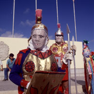
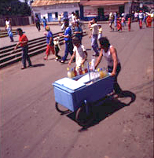
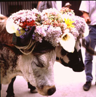

VII. Manifestaciones Musicales
Vamos a conocer de
cerca algunas manifestaciones
donde
la música juega un papel importante en su función social
de culto y diversión. Incluímos fiestas tradicionales del
calendario, manifestaciones musicales que suceden todo el año,
así
como también varias celebraciones de las comunidades
indígenas.
¿Culto
o Diversión?
Las manifestaciones de
culto se caracterizan por
poseer
una creencia religiosa o de ritual compartida por sus participantes. En
el Tamunangue se venera a San Antonio y es en sí un acto
religioso.
Sin embargo, por su vistosidad, bella música y carácter
especial,
asisten a estas celebraciones muchas personas de otros lugares como
espectadores,
curiosos y también turistas. Esta participación en el
festejo
de personas extrañas a los devotos, lo convierten al mismo
tiempo
en un espectáculo de diversión para las visitas y de
culto
para los creyentes. Por ejemplo, el carácter religioso de los
Diablos
Danzantes se ve muchas veces irrespetado por la muchedumbre masiva que
visita al evento. De esta manera, al asistir a una celebración y
no ser parte activa de su religiosidad, hay que tener cuidado de no
intervenir,
por respeto a las creencias del ritual.
Turismo
Cultural
La tendencia de las
actividades religiosas a
convertirse
en espectáculos de diversión la mencionamos anteriormente
como una característica de las áreas urbanas. Cualquier
festividad
es convertida en un atractivo para convocar a masas de personas a
consumir
bebidas, comidas, incluso cobrándosele la entrada. No se toma en
cuenta la función verdadera de la celebración y se
descuida
la manera tradicional de hacer su música, danza y vestuarios. En
las ciudades, la deformación de las manifestaciones
tradicionales
es un hecho muy frecuente.
Sin embargo, en comunidades donde se celebra como es
debido y se mantiene viva la tradición, existe la
tentación
de convertirla simultáneamente en un atractivo para el turismo
cultural.
Para este propósito, se mantiene la celebración con todo
su esplendor, se toma aún más cuidado en los detalles de
presentación, vestuarios ycalidad de ejecución de la
música
y danza. La diferencia ahora es que se promociona el evento para darlo
a conocer fuera del ámbito de su comunidad. Se convierte
entonces
en un punto típico para ser visto, con todo respeto, por
extraños
lejanos a la creencia. Su función pasa de culto a comercio. La
comunidad
gana en las ventas de los negocios de comidas, bebidas y
artesanías
que se incrementan con los visitantes. El turismo cultural es un factor
nuevo, un “invasor”, que puede ayudar a sobrevivir a la fiesta
tradicional,
o puede cambiarla y destruir su sentido si se descuida el balance entre
el culto y el comercio.
Características de las
Manifestaciones
Además de
música, las manifestaciones
pueden
incluir los siguientes elementos en su celebración, para
convertirse
en un acontecimiento muy especial para la comunidad que lo festeja,
algo
que no sucede todos los días:
Actividades
- Danza o baile individual, en parejas o en
grupos.
- Teatro en la calle, representación de
animales, diablos,
cambios de género, situaciones de batallas, actividades de
trabajo
y tejido de un palo central con cintas.
- Recorridos por las calles en grupos,
procesiones,
comparsas,
con ejecución ambulante de música.
- Recolección de aportes de dinero.
- Pago de promesas.
- Detonación de fuegos artificiales,
cohetones
y lanzamiento
de globos de papel.
Ornamentos
- Utilización de vestuarios, disfraces,
trajes
atractivos,
máscaras, cascabeles o prendas sonoras, maquillaje facial y
objetos
como bastones y veradas.
- Embellecimiento de los lugares públicos,
fachadas
de casas, plazas, calles, incluyendo adornos, bande-ras, pancartas,
luces,
flores, guirnaldas y papelillo. Recien-temente se incluye con
insis-tencia
la propaganda gráfica de cigarrillos, cerveza y partidos o
personalidades
políticas.
- Construcción de altares en lascasas y
calles, con
imágenes y maniquíes de santos y símbolos
religiosos,
especialmente de cruces.
Gastronomía
- Existencia de comida ambulante, que puede
incluir
el perrocalientero,
el carrito del heladero, el raspadero, el chichero, venta de parrilla
con
yuca, pinchos, empanadas y churros.
- Venta de bebidas gaseosas y alcohólicas,
como refrescos
en lata y cerveza en toldos especiales de sus empresas. Bebidas caseras
como agua panela, chicha y guarapita.
- Comidas en reuniones familiares en torno a la
celebración.